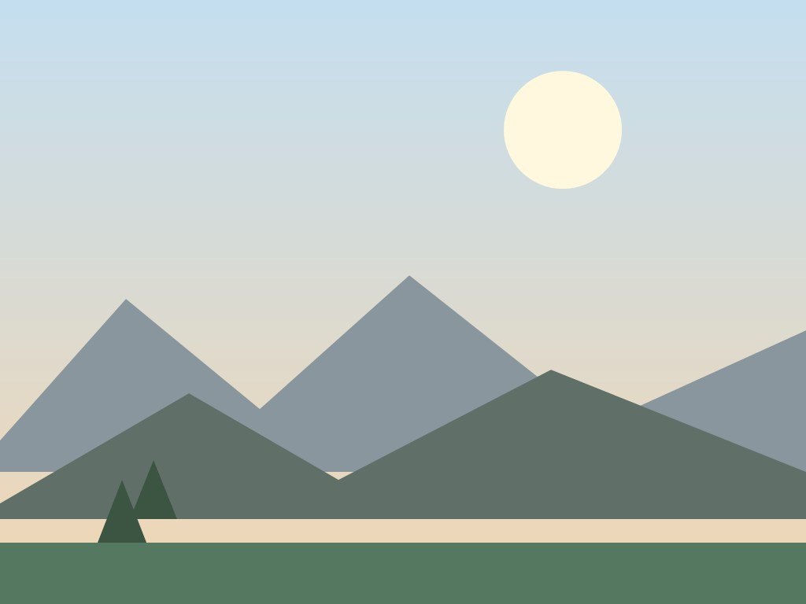
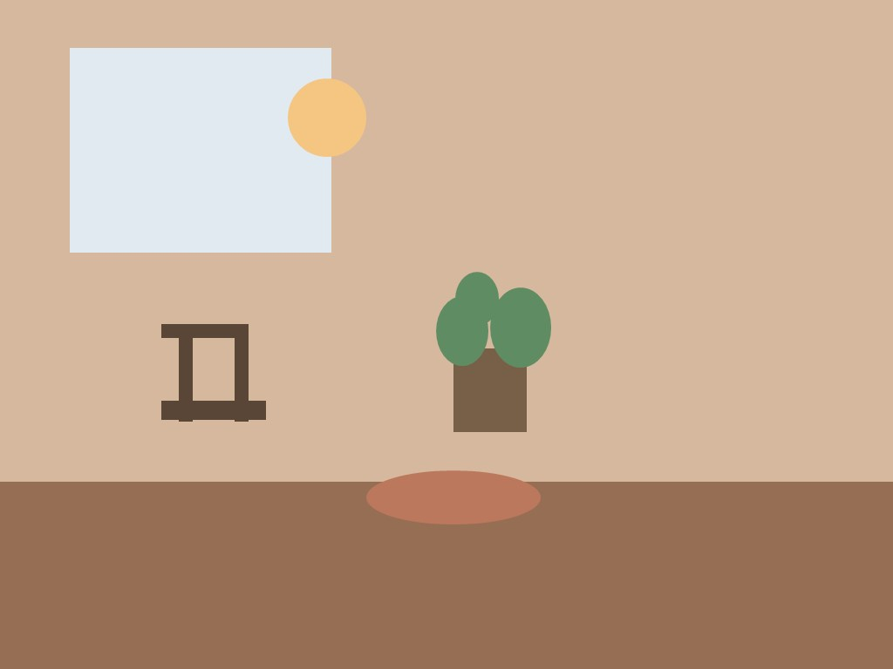
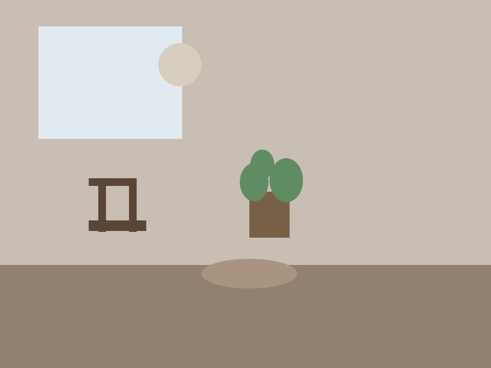
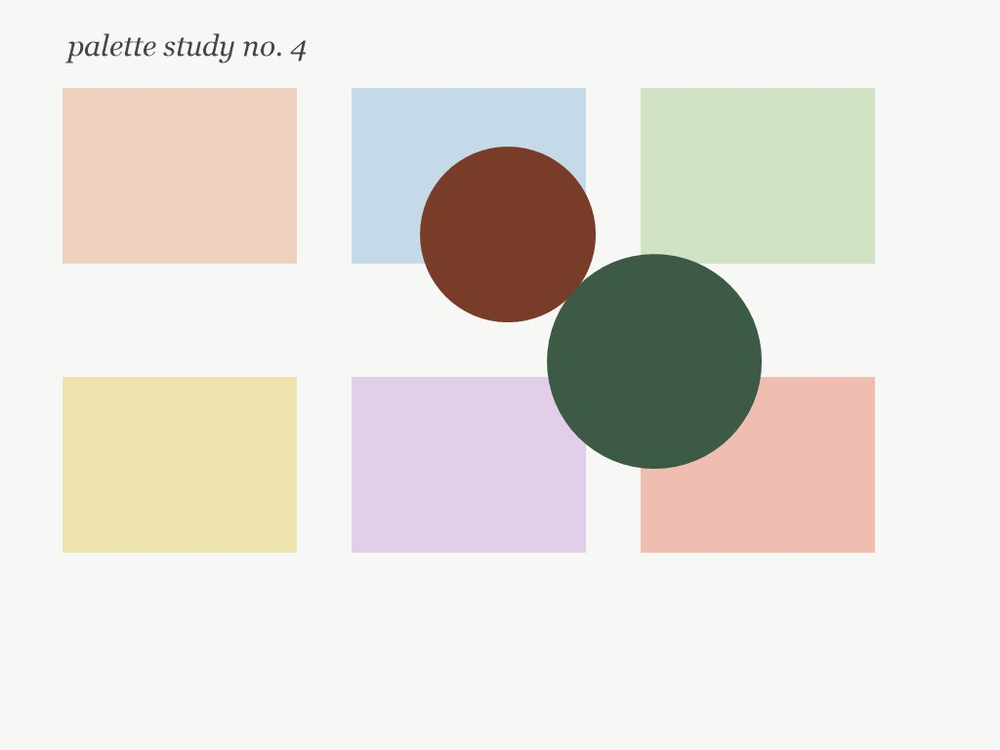

A slow gallery · text and arrangement by the editor
A year of collecting pictures of rooms, and the pattern is embarrassingly
consistent: warm light, one good chair, and a window that frames
something ordinary.

Room one: the landscape as the largest room.

Room two: the afternoon that convinced us to start saving.

Room three: the same room, one season later.

Room four: a palette you can live inside.Room five: a dune at the hour when nothing is urgent.Room six: the same hour, a different sky.Room seven: the sea at night, for contrast.
The lesson of the year: save the rooms, and you keep the afternoons.